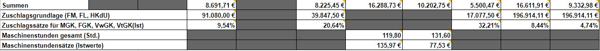
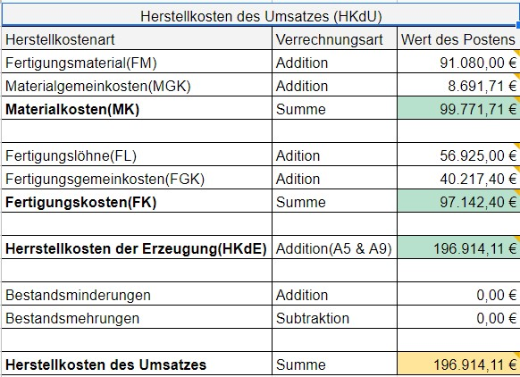
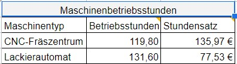

In der Zeile Zuschlagsgrundlage kommen jeweils die Einzelkosten aus dem Kostenartenplan
bzw. aus der Nebenrechnung. Für die Verwaltung und den Vertrieb wird jeweils die
Herstellkosten des Umsatzes(HkdU) eingetragen.


In der Nebenrechnung werden die Einzelkosten und und Gemeinkosten jeweils addiert zu
MK und FK. Danach werden FK und MK miteinander addiert
zu den Herstellkosten der Erzeugung (HkdE). Wenn nun fertige Produkte auf liegen (Bestandsmehrung)
oder fertige Produkte aus dem Lager geklaut wurden(Bestandsminderung) wird mit dem HkdE
verrechnet und wird somit zu den Herstellkosten des Umsatzes (HkdU)
Die Maschinenstundensätze werden berechnet, indem die Gemeinkosten der einzelnen Maschine
durch den realen Wert der Maschinenstunden geteilt werden.